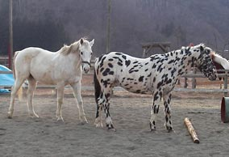

|
■2007/02/12/(Mon)23:23
チョイ悪温泉
|

本日は高校時代のお友達3人と山梨方面へ温泉旅行。
テーマは「ちょい悪温泉で！」って再会早々伝えたら、終始大ウケ。
こーゆーどうしようもないことで楽しめる友達がいるとゆーのは幸せですねー。
まずは「五平餅と、アメリカンドッグと甘酒！」と、談合坂SAに行って、アメリカンドッグと玉蒟蒻をたべて（五平餅と甘酒は無視）樹海に行って、風穴、氷穴と穴めぐり3箇所して、温泉行って「馬刺し」と「湯葉刺し」。
温泉塩素くさい…と、違う温泉へ行くことにして、マダラの馬を発見。次の温泉では硫黄泉を堪能。湯上りに「刺身こんにゃく」「フキノトウ天ぷら」
ずーっと笑いっぱなしで、ほんと楽しかった。
お友達とゆーのは本当に大切にしなきゃいけないのだなーと改めて実感。
今日はみんなありがとー！
帰ってきたら別のお友達（？）からもご連絡があって、びっくりしましたよー。
|
|
|